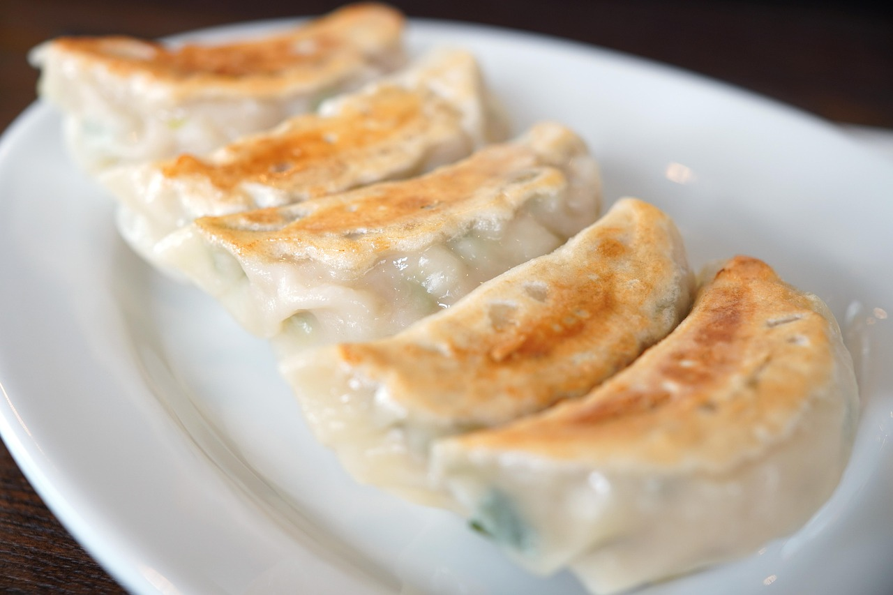
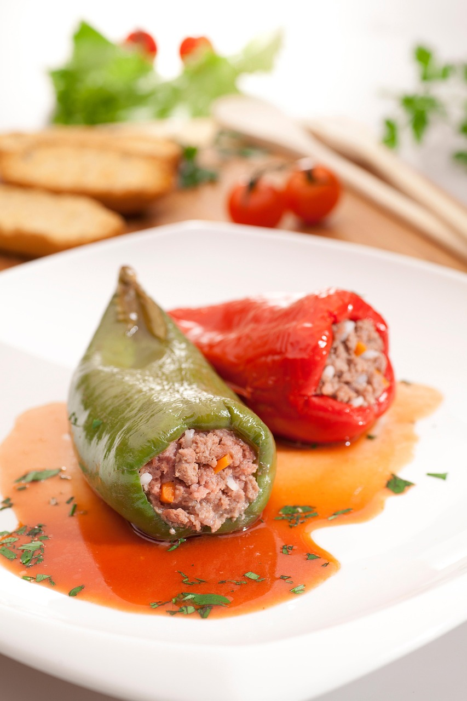
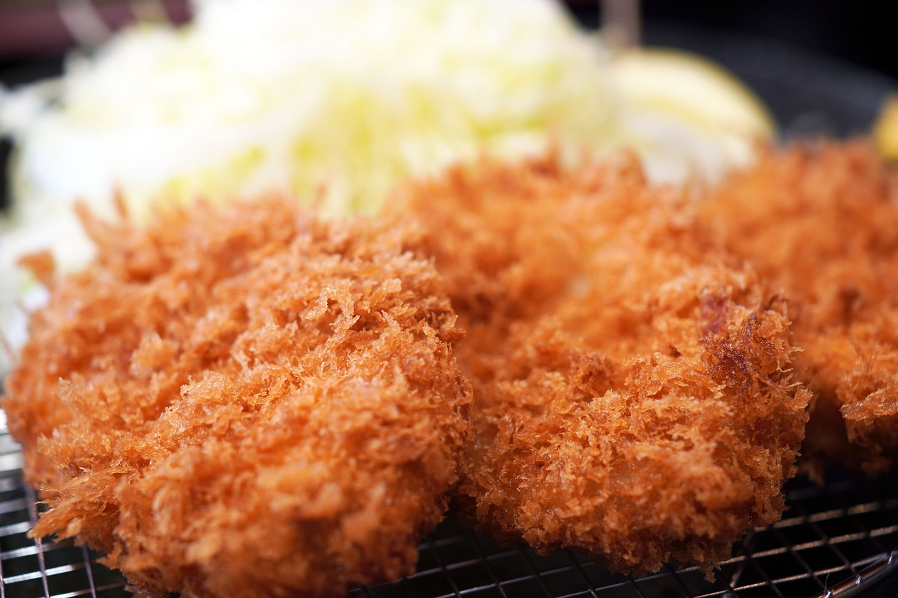
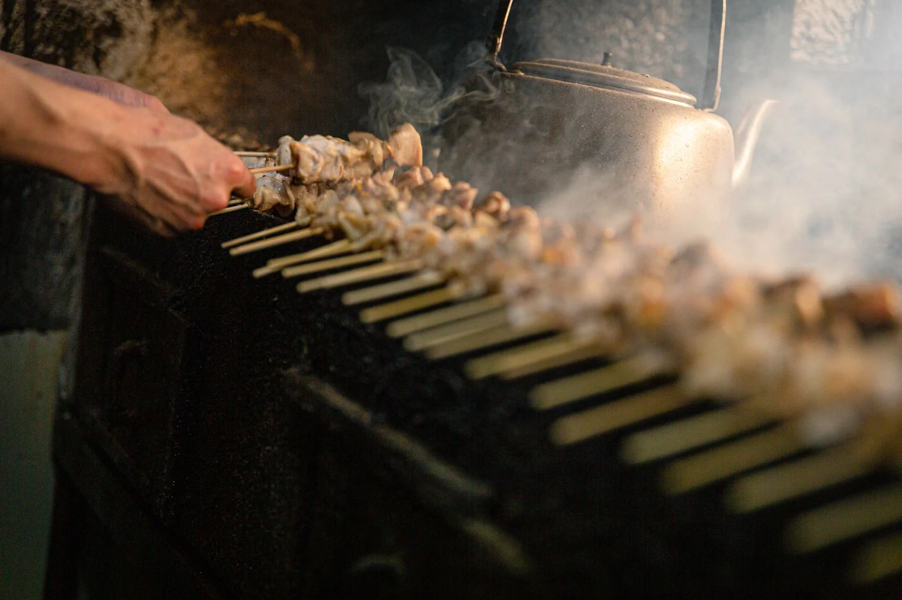

📋 課題2: リスト作成
指示: 好きな食べ物を5つ、番号付きリスト（ol）で作成してください。
- 餃子
- ピーマンの肉詰め
- ヒレカツ
- チキンカツ
- 焼き鳥





指示: 下記のHTMLコメント部分に、あなたの自己紹介を書いてください。
名前: 中村美結
職業: 大学生
趣味: 旅行
✅ 完了したら、この課題は終了です
指示: 好きな食べ物を5つ、番号付きリスト（ol）で作成してください。



